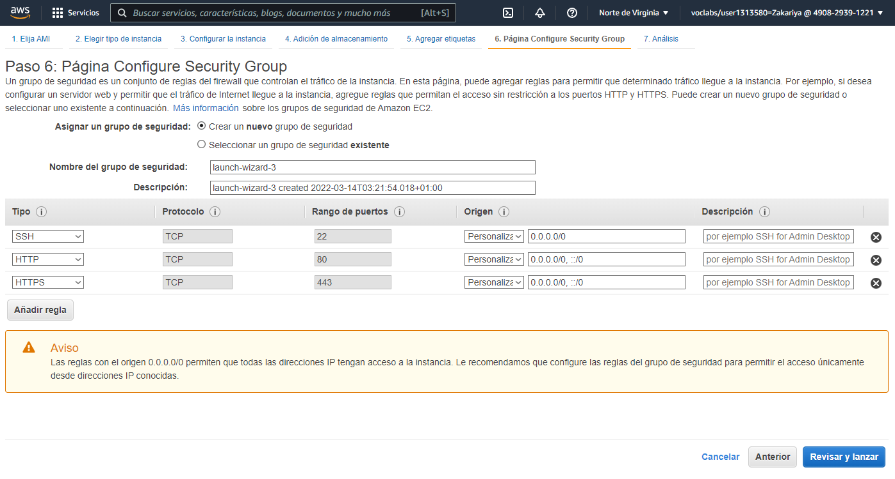
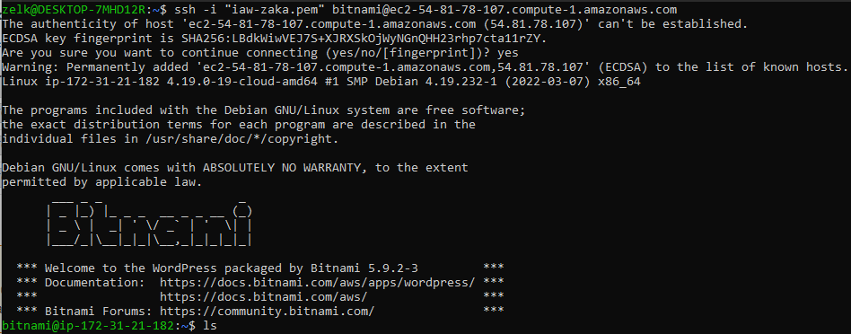
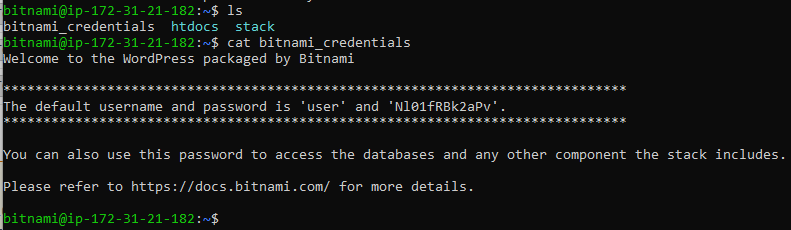
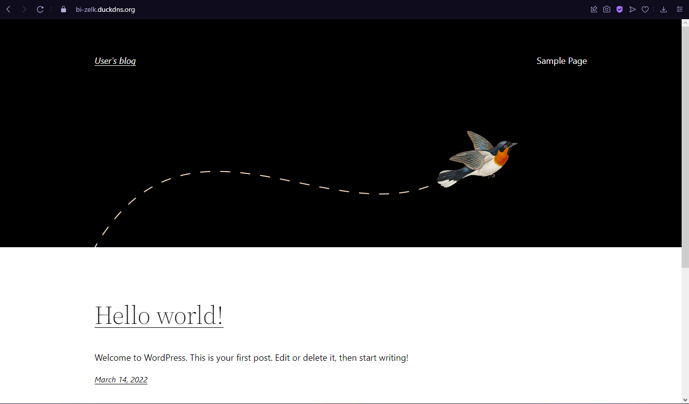
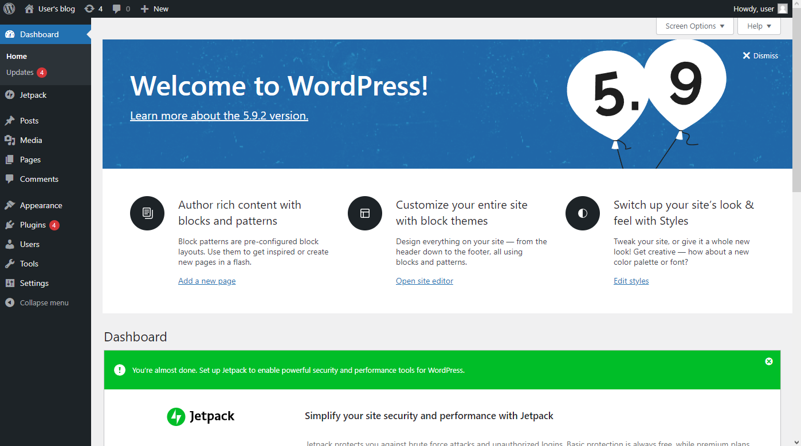
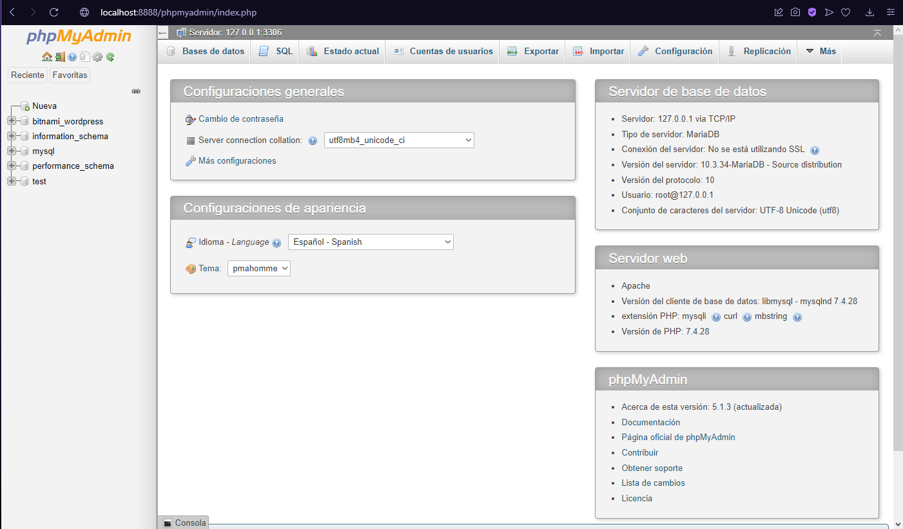

Práctica 12: Amazon Machine Image (AMI) de Bitnami para WordPress
AMI: ami-04368838d2c170804 Es la ultima versión de la Community AMI de Bitnami con la ultima versión de WordPress. Estraida de la lista de todas las AMIS disponibles la página oficial de Bitnami.
-
Se crea como una máquina normal de Amazon. Seguimos los pasos y en Grupos de seguridad agregamos los siguientes:
- SSH (TCP)
- HTTP (TCP)
- HTTPS (TCP)

-
Para conectar a la instancia debemos tener en cuenta de que el usuario es 'bitnami'. Por lo que en el ssh hay que poner 'bitnami' en vez de 'admin', por ejemplo:
ssh -i "iaw-zaka.pem" bitnami@ec2-54-81-78-107.compute-1.amazonaws.com.
-
Una vez estamos dentro debemos buscar el fichero de las credenciales y le hacemos un cat.
Nota: Suele tardar hasta que se verifique la imagen.

-
Entramos en el directorio stack/bncert para configurar HTTPS con la utilidad bncert. Ejecutamos en mi caso el bncert-0.7.3-linux-x64.run y seguimos los pasos para configurar nuestro sitio como HTTPS.
bitnami@ip-172-31-21-182:~/stack/bncert$ sudo ./bncert-0.7.3-linux-x64.run ---------------------------------------------------------------------------- Welcome to the Bitnami HTTPS Configuration tool. ---------------------------------------------------------------------------- Domains Please provide a valid space-separated list of domains for which you wish to configure your web server. Domain list []: bi-zelk.duckdns.org The following domains were not included: www.bi-zelk.duckdns.org. Do you want to add them? [Y/n]: n Warning: No www domains (e.g. www.example.com) or non-www domains (e.g. www.example.com) have been provided, so the following redirections will be disabled: non-www to www, www to non-www. Press [Enter] to continue: ---------------------------------------------------------------------------- Enable/disable redirections Please select the redirections you wish to enable or disable on your Bitnami installation. Enable HTTP to HTTPS redirection [Y/n]: y ---------------------------------------------------------------------------- Changes to perform The following changes will be performed to your Bitnami installation: 1. Stop web server 2. Configure web server to use a free Let's Encrypt certificate for the domains: bi-zelk.duckdns.org 3. Configure a cron job to automatically renew the certificate each month 4. Configure web server name to: bi-zelk.duckdns.org 5. Enable HTTP to HTTPS redirection (example: redirect http://bi-zelk.duckdns.org to https://bi-zelk.duckdns.org) 6. Start web server once all changes have been performed Do you agree to these changes? [Y/n]: y ---------------------------------------------------------------------------- Create a free HTTPS certificate with Let's Encrypt Please provide a valid e-mail address for which to associate your Let's Encrypt certificate. Domain list: bi-zelk.duckdns.org Server name: bi-zelk.duckdns.org E-mail address []: zelk991@g.educaand.es The Let's Encrypt Subscriber Agreement can be found at: https://letsencrypt.org/documents/LE-SA-v1.2-November-15-2017.pdf Do you agree to the Let's Encrypt Subscriber Agreement? [Y/n]: y ---------------------------------------------------------------------------- Performing changes to your installation The Bitnami HTTPS Configuration Tool will perform any necessary actions to your Bitnami installation. This may take some time, please be patient. ---------------------------------------------------------------------------- Success The Bitnami HTTPS Configuration Tool succeeded in modifying your installation. The configuration report is shown below. Backup files: * /opt/bitnami/apache/conf/httpd.conf.back.202203140244 * /opt/bitnami/apache/conf/bitnami/bitnami.conf.back.202203140244 * /opt/bitnami/apache/conf/bitnami/bitnami-ssl.conf.back.202203140244 * /opt/bitnami/apache/conf/vhosts/wordpress-https-vhost.conf.back.202203140244 * /opt/bitnami/apache/conf/vhosts/wordpress-vhost.conf.back.202203140244 Find more details in the log file: /tmp/bncert-202203140244.log If you find any issues, please check Bitnami Support forums at: https://community.bitnami.com Press [Enter] to continue: bitnami@ip-172-31-21-182:~/stack/bncert$ -
Accedemos a la URL https://bi-zelk.duckdns.org. Ahora tenemos listo un sitio WordPress listo para administrar.

Probamos entrar a wp-admin con las credenciales obtenidas. 
-
Ahora creamos un tunel SSH de la máquina bitnami a mi máquina para acceder a phpMyAdmin desde localhost:8888/phpmyadmin de mi máquina.
Usando
ssh -N -L 8888:127.0.0.1:80 -i "iaw-zaka.pem" bitnami@ec2-54-81-78-107.compute-1.amazonaws.comcreamos el tunel.Ahora desde un navegador ponemos 'http://localhost:8888/phpmyadmin/'. 